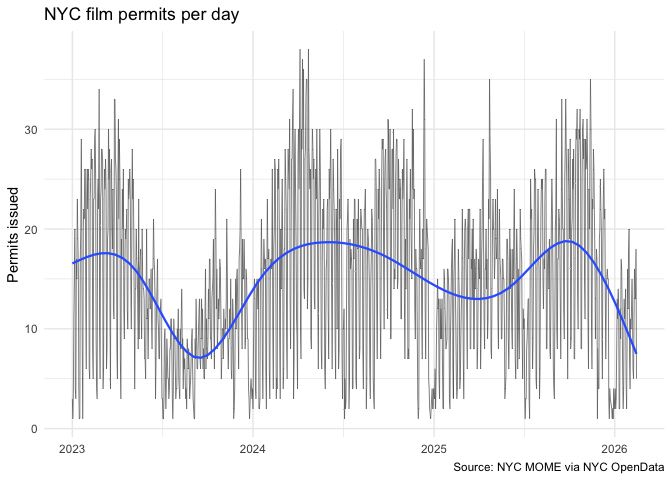

nycsets packages film, television, and other production permits issued by the New York City Mayor’s Office of Media and Entertainment (MOME). It provides one main permits table and three long companion tables that link each permit to its affected community boards, NYPD precincts, and ZIP codes.
Installation
You can install the development version of nycsets from GitHub with:
# install.packages("remotes")
remotes::install_github("kjhealy/nycsets")What’s included
nyc_film_permits_df
#> # A tibble: 17,177 × 13
#> event_id event_type start_date_time end_date_time
#> <int> <chr> <dttm> <dttm>
#> 1 677665 Shooting Permit 2023-02-08 06:00:00 2023-02-08 22:00:00
#> 2 677666 Shooting Permit 2023-02-09 06:00:00 2023-02-09 22:00:00
#> 3 677670 Shooting Permit 2023-02-10 06:00:00 2023-02-10 22:00:00
#> 4 677675 Shooting Permit 2023-02-11 06:00:00 2023-02-11 22:00:00
#> 5 677679 Shooting Permit 2023-02-12 06:00:00 2023-02-12 22:00:00
#> 6 677681 Shooting Permit 2023-02-13 06:00:00 2023-02-13 22:00:00
#> 7 677682 Shooting Permit 2023-02-14 06:00:00 2023-02-14 22:00:00
#> 8 677683 Shooting Permit 2023-02-15 06:00:00 2023-02-15 22:00:00
#> 9 677684 Shooting Permit 2023-02-16 06:00:00 2023-02-16 22:00:00
#> 10 677685 Shooting Permit 2023-02-17 06:00:00 2023-02-17 22:00:00
#> # ℹ 17,167 more rows
#> # ℹ 9 more variables: entered_on <dttm>, parking_held <chr>, borough <chr>,
#> # community_boards <chr>, police_precincts <chr>, category <chr>,
#> # sub_category_name <chr>, country <chr>, zip_codes <chr>
nyc_film_permit_boards_df
#> # A tibble: 21,432 × 2
#> event_id community_board
#> <int> <int>
#> 1 677665 4
#> 2 677666 4
#> 3 677670 4
#> 4 677675 4
#> 5 677679 4
#> 6 677681 4
#> 7 677682 4
#> 8 677683 4
#> 9 677684 4
#> 10 677685 4
#> # ℹ 21,422 more rows
nyc_film_permit_precincts_df
#> # A tibble: 22,030 × 2
#> event_id police_precinct
#> <int> <int>
#> 1 677665 18
#> 2 677666 18
#> 3 677670 18
#> 4 677675 18
#> 5 677679 18
#> 6 677681 18
#> 7 677682 18
#> 8 677683 18
#> 9 677684 18
#> 10 677685 18
#> # ℹ 22,020 more rows
nyc_film_permit_zips_df
#> # A tibble: 26,067 × 2
#> event_id zip_code
#> <int> <chr>
#> 1 677665 10019
#> 2 677666 10019
#> 3 677670 10019
#> 4 677675 10019
#> 5 677679 10019
#> 6 677681 10019
#> 7 677682 10019
#> 8 677683 10019
#> 9 677684 10019
#> 10 677685 10019
#> # ℹ 26,057 more rowsExamples
Top production categories by borough:
nyc_film_permits_df |>
filter(!is.na(borough)) |>
count(borough, category) |>
pivot_wider(
names_from = borough,
values_from = n,
values_fill = 0
) |>
arrange(desc(Manhattan))
#> # A tibble: 9 × 6
#> category Bronx Brooklyn Manhattan Queens `Staten Island`
#> <chr> <int> <int> <int> <int> <int>
#> 1 Television 314 2404 2853 1680 50
#> 2 Theater 5 878 2431 0 0
#> 3 Film 74 881 1076 302 70
#> 4 Commercial 58 753 968 136 9
#> 5 Still Photography 2 321 715 33 1
#> 6 WEB 14 309 480 37 6
#> 7 Documentary 2 42 89 11 8
#> 8 Student 6 26 49 18 0
#> 9 Music Video 1 31 29 5 0Permits per day over time:
nyc_film_permits_df |>
filter(!is.na(start_date_time)) |>
mutate(date = as.Date(start_date_time)) |>
count(date) |>
ggplot(aes(date, n)) +
geom_line(linewidth = 0.3, alpha = 0.6) +
geom_smooth(se = FALSE, linewidth = 0.8) +
labs(
x = NULL,
y = "Permits issued",
title = "NYC film permits per day",
caption = "Source: NYC MOME via NYC OpenData"
) +
theme_minimal()
#> `geom_smooth()` using method = 'gam' and formula = 'y ~ s(x, bs = "cs")'
Top ten ZIP codes by permit count:
nyc_film_permit_zips_df |>
count(zip_code, sort = TRUE) |>
slice_head(n = 10)
#> # A tibble: 10 × 2
#> zip_code n
#> <chr> <int>
#> 1 11222 2533
#> 2 11101 1338
#> 3 10036 1111
#> 4 10019 1020
#> 5 10001 975
#> 6 10013 950
#> 7 10023 924
#> 8 10003 877
#> 9 10011 603
#> 10 11201 600